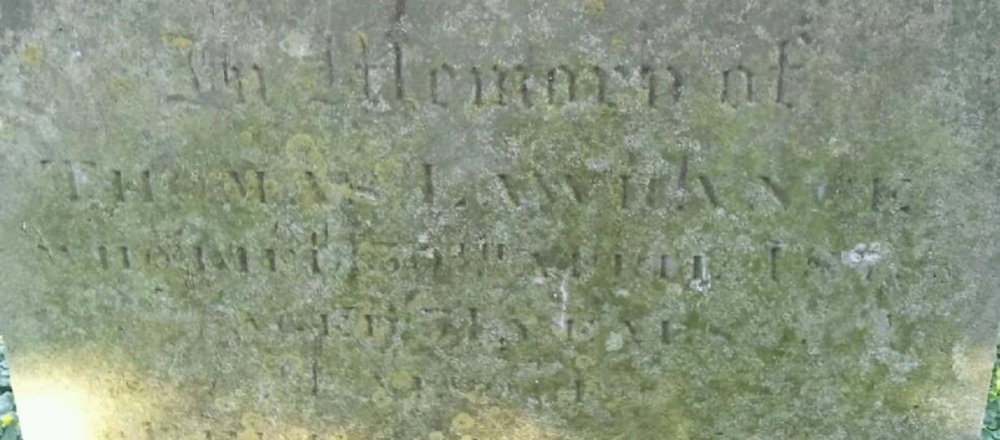
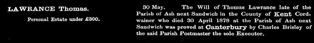

Thomas Laurence c1808 - 1878
[ Home ] | [ Calendar ] | [ Surnames Index ] | [ Family History ]The child of Zechariah Lawrence (a laborer) and Ann Cooper, Thomas Laurence, the three times great-uncle of <a href="I1.html">Nigel Horne</a>, was born in Ash, Kent, England <i>c.</i> 1808<span class="citation">1,2,3,4,5</span> and baptized there on Sep 25, 1808. He was married to Rebecca.</p><p>Thomas spent all of his life in Kent, England. Throughout his life, he lived at his birthplace in 1841<span class="citation">1</span>, in 1851<span class="citation">2</span>, in 1861<span class="citation">3</span> and in 1871<span class="citation">4</span> which is where he died on Apr 30, 1878<span class="citation">5,6</span>. He was buried there on May 3, 1878<span class="citation">6</span>.
Parents
- Zechariah was born c. 1784
- Ann was born c. 1780
Citations
- 1841 England Census Online publication - Provo, UT, USA: The Generations Network, Inc., 2006.Original data - Census Returns of England and Wales, 1841. Kew, Surrey, England: The National Archives of the UK (TNA): Public Record Office (PRO), 1841. Data imaged from the National
- 1851 England Census Online publication - Provo, UT, USA: The Generations Network, Inc., 2005.Original data - Census Returns of England and Wales, 1851. Kew, Surrey, England: The National Archives of the UK (TNA): Public Record Office (PRO), 1851. Data imaged from the National (Relation to Head of House: Head)
- 1861 England Census Online publication - Provo, UT, USA: The Generations Network, Inc., 2005.Original data - Census Returns of England and Wales, 1861. Kew, Surrey, England: The National Archives of the UK (TNA): Public Record Office (PRO), 1861. Data imaged from the National (Relation to Head of House: Head)
- 1871 England Census Online publication - Provo, UT, USA: The Generations Network, Inc., 2004.Original data - Census Returns of England and Wales, 1871. Kew, Surrey, England: The National Archives of the UK (TNA): Public Record Office (PRO), 1871. Data imaged from the National (Relation to Head of House: Head)
- England & Wales, FreeBMD Death Index: 1837-1915 Online publication - Provo, UT, USA: The Generations Network, Inc., 2006.Original data - General Register Office. England and Wales Civil Registration Indexes. London, England: General Register Office. © Crown copyright. Published by permission of the Cont
- England, Select Deaths and Burials, 1538-1991 Ancestry.com Operations, Inc.
Media
Thomas Laurence - gravestone

Thomas Lawrance - probate

1851 England, Wales & Scotland Census Transcription - GBC-1851-0005904820
Family Tree

Generated by Ged2Site. Last updated on Jul 20, 2025